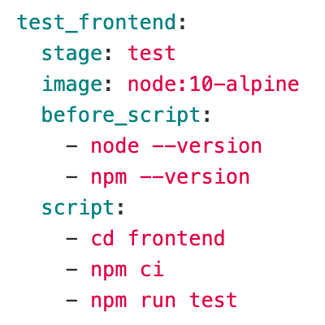
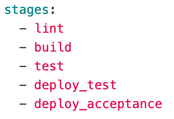
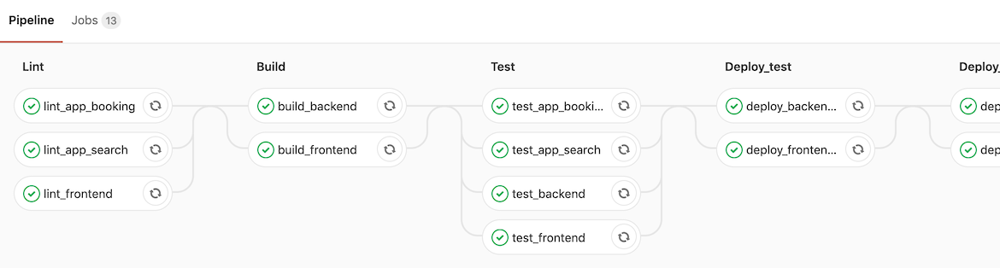

GitLab to Azure auto-deploy
Sander Vink
INFI-CON 2019, May 27th
Deployment in the good old days
Open/save files over FTP;
Or over FTPS;
Or was it SFTP?

Right... they exist both!
FTPS: FTP over SSL, with TLS support
SFTP: SSH FTP, like SCP (but different)
So FTP works, right?
Well... sure!
But...
Then came version control
- CVS
- Subversion
- Git

Well... it's better, but not great yet!
Let's automate things
You have probably heard of CI & CD, right?
You know... stuff like:
- Continuous Integration
- Continuous Delivery
- Continuous Deployment
So basically we want to:
- build our software,
- test our software,
- and deploy our software
... automatically!
We can use GitLab Pipelines for that
Pipeline configuration
Pipelines are defined in the .gitlab-ci.yml file
Jobs are the basic configuration component

Stages are defined using the

By default the listed stages are executed in order
